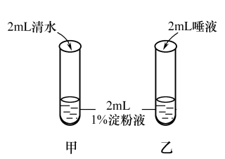

2019年北京市中考生物试题 · 选择题 第6、7、8、9、10题 · 对应解析
6. 下列关于“探究发生在口腔内的化学消化”实验的叙述，错误的是（ ）

A. 唾液腺分泌的唾液中含有淀粉酶
B. 淀粉液与清水或唾液应充分混合
C. 两试管置于37℃条件下反应一段时间
D. 充分反应后滴加碘液，乙试管中液体变蓝
【答案】D
【解析】
【分析】此题是科学探究题，在探究中要形成对照实验并且有单一变量，这个变量是唾液淀粉酶，在对照实验中其他条件都应一样。
【详解】唾液腺分泌的唾液中含有淀粉酶，唾液淀粉酶能对淀粉起消化作用。A正确；为使唾液淀粉酶能对淀粉进行充分的消化，淀粉液与清水或唾液应充分混合。B正确；37℃接近人体温度，有利于酶对淀粉的分解，因此两试管置于37℃条件下反应一段时间。C正确；乙试管中加入的是唾液，唾液能消化淀粉，因此滴加碘液乙试管中液体不变蓝。D错误。
【点睛】本题要求掌握的是“唾液淀粉酶对淀粉的消化作用”实验的具体步骤，应学会辨别。
7. 实验观察某种哺乳动物的心脏，下列对观察结果的描述错误的是（ ）
A. 心房位于心室的上方B. 左心室壁比右心室壁厚
C. 动脉瓣朝心室方向开D. 肺静脉与左心房相连
【答案】C
【解析】
【分析】心脏的四个腔分别是：左心房、左心室、右心房、右心室。左心房连通肺静脉，左心室连通主动脉，右心房连通上、下腔静脉，右心室连通肺动脉。
【详解】心脏四个腔中，心房在上，心室在下，心房位于心室的上方。A正确；左心室连通主动脉，心室壁收缩时将血液泵出流向全身各处；右心室连通肺动脉，心室壁收缩时将血液泵出流向肺部。左心室的血液流经途径比右心室途径长，因此左心室壁比右心室壁厚。B正确；在心房与心室之间有房室瓣，心室与动脉之间有动脉瓣，房室瓣朝心室方向开，动脉瓣朝动脉方向开。C错误；肺静脉与左心房相连，血液由肺静脉流入左心房。D正确。
【点睛】此题考查的是对心脏四个腔的位置、连通的血管和血液流经途径的掌握。
8. 我国倡导无偿献血。献血时一般从献血者肘窝处的静脉采血，而非动脉采血，下列解释错误的是（ ）
A. 静脉在皮下 分布大多较浅B. 静脉管径较大、管壁薄
分布大多较浅B. 静脉管径较大、管壁薄
C. 静脉内血流速度较快D. 静脉采血后容易止血
【答案】C
【解析】
【分析】此题可根据静脉的特点分析解答。
【详解】静脉的特点是：在皮下的分布大多较浅，如我们手臂上的“青筋”；管径较大、管壁薄；这样的特点采血时更易寻找并且针头容易刺入。血液是流经毛细血管后流入静脉，压力较低，因此静脉管内血流速度较慢，采血后容易止血。ABD正确。C错误
【点睛】本题要求掌握的是静脉的特点在医学上的应用。
9. 肺是人体呼吸系统的主要器官。下列叙述错误的是（ ）
A. 外界气体经过呼吸道进入肺
B. 肺泡数量多，气体交换面积大
C. 肺泡与毛细血管气体交换后肺泡内氧气含量增加
D. 胸廓容积变小时，肺收缩，气体从肺内排出
【答案】C
【解析】
【分析】肺是人体呼吸系统的主要器官，是气体交换的场所，由许多肺泡构成。
【详解】外界气体经过呼吸道进入肺，呼吸道不仅能保证气体顺畅通过，而且能对吸入的气体进行处理，使到达肺部的气体温暖、湿润、清洁。A正确；肺泡外面包绕着丰富的毛细血管，有利于肺泡与血液充分的进行气体交换，肺泡数量多，气体交换面积大。B正确；肺泡与毛细血管进行气体交换时，肺泡内的氧气扩散进入血液，血液里的二氧化碳扩散进入肺泡，所以肺泡内二氧化碳含量增加。C错误；呼气时，呼吸肌舒张，胸廓容积变小，肺收缩，气体从肺内排出。D正确。
【点睛】此题考查的是肺与外界的气体交换和肺泡与血液的气体交换，要求理解并掌握。
10. 北京电视台在国内最早推出手语节目，方便听障人士了解时事新闻。他们观看节目时，图像信息成像于（ ）
A. 角膜B. 晶状体C. 睫状体D. 视网膜
【答案】D
【解析】
【分析】此题可根据眼球的基本结构和功能分析解答。
【详解】角膜无色，透明，可以透过光线；晶状体透明，有弹性，像双凸透镜，能折射光线；睫状体内含平滑肌，可调节晶状体曲度；视网膜含有许多对光线敏感的细胞，能感受光的刺激，形成物像。D符合题意。
【点睛】此题要注意区分眼球各结构的功能。